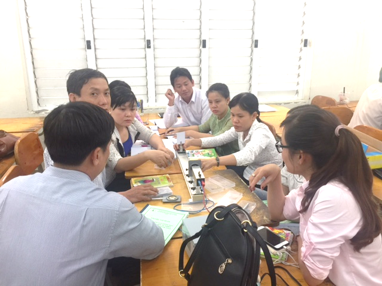
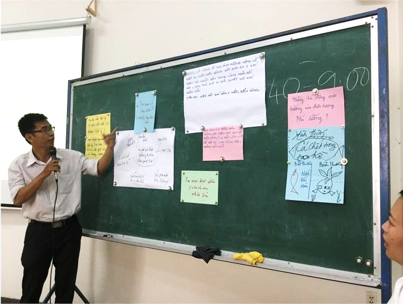

Khoa Vật Lý - Vật Lý Kỹ Thuật là cơ sở đào tạo và nghiên cứu có lịch sử lâu đời (từ năm 1942), có uy tín bậc nhất trong khu vực phía Nam và cả nước về các lãnh vực liên quan đến vật lý. Ngành đào tạo sau đại học Vật lý Vô tuyến và Điện tử (hướng ứng dụng) trực thuộc khoa Vật lý đến nay đã đào tạo được 28 khóa, cung cấp cho đất nước hàng ngàn thạc sĩ, tiến sĩ có trình độ rất cao, đáp ứng cho nhu cầu công nghiệp hóa và hiện đại hóa của đất nước.
1. Mục tiêu đào tạo
Mục tiêu của chương trình cao học ngành Vật lý kỹ thuật - giảng dạy thực nghiệm cung cấp các kiến thức vế lý thuyết và thực nghiệm bậc cao học, cập nhật trình độ khoa học công nghệ về ứng dụng vật lý cho giáo viên các trường phổ thông, trang bi kỹ năng thiết kế bài giảng thực nghiệm môm Vật lý.

2. Thế mạnh của chương trình
Học viên được cung cấp các kiến thức căn bản và chuyên sâu về vật lý, đảm bảo đủ năng lực để xây dựng các bài giảng theo xu hướng hiện đại trên nền tảng: lý thuyết khoa học kết hợp với thực nghiệm; tiếp cận khoa học kỹ thuật và công nghệ mới nhằm nâng cao hiệu quả giảng dạy trong các trường phổ thông. Các kiến thức cụ thể bao gồm:
Các kiến thức về vật lý điện tử - Linh kiện bán dẫn - Photonics - Vật lý plasma:
- Nghiên cứu và chế tạo các linh kiện điện tử, vật liệu bán dẫn như LED, photodiode, diode laser, HEMT… Khảo sát các tính chất quang, quang-điện của các vật liệu quang điện tử như các chất bán dẫn (II-VI, III-V), các vật liệu pha tạp ion đất hiếm hoặc kim loại chuyển tiếp, các cấu trúc lượng tử/vật liệu nanô.
- Nghiên cứu và chế tạo các hệ vi cơ điện tử, cảm biến, bộ dò kích thước nano.
- Nghiên cứu về lĩnh vực công nghệ photonics và các ứng dụng của nó.
Kiến thức về công nghệ màng mỏng và vật liệu nano - photonics
- Nắm vững công nghệ chế tạo màng mỏng bán dẫn và các vật liệu nano: quantum dot, nano tube, nano wire… bằng các phương pháp hiện đại như phún xạ magnetron, PLD, solgel, phương pháp hóa lý,... Nghiên cứu các ứng dụng của màng mỏng, vật liệu nano trong các ngành khoa học mũi nhọn, trong y sinh và trong đời sống.
- Nắm vững các phương pháp xác định các cấu trúc và tính chất lý hóa của vật liệu bán dẫn.
Các kiến thức về thiết kế bài giảng - dạy học
- Sử dụng các kiến thức trên để
Lập trình mô phỏng
- Sử dụng các thuật toán và các phần mềm chuyên dụng để mô phỏng các vấn đề về linh kiện điện tử, và các vật liệu có cấu trúc nano, màng mỏng bán dẫn
- Hoàn thiện khả năng lập trình bằng ngôn ngữ Matlab, C++, Java, C#, etc
Kỹ năng mềmKỹ năng làm việc nhóm, kỹ năng giao tiếp, kỹ năng trình bày, viết báo cáo, viết luận văn, viết báo khoa học…; các kỹ năng có được thông qua các giờ học tập trên lớp, thực tập thực tế, quá trình nghiên cứu tại phòng thí nghiệm.
Kỹ năng cứng
- Các kỹ năng thực hành và nghiên cứu khoa học tại phòng thí nghiệm.
- Các kỹ năng trình bày báo cáo, seminar, tham dự hội thảo.
- Học viên có khả năng làm việc độc lập, sáng tạo, và có năng lực phát hiện, phân tích và giải quyết những vấn đề thuộc vật lý kỹ thuật.
Theo quy chế đào tạo trình độ Thạc sĩ và Tiến sĩ do ĐHQG-HCM ban hành.

3. Học viên sau khi tốt nghiệp có thể đảm nhận các công việc sau đây:
- Giảng dạy tại các trường phổ thông, các trường Đại học, Cao đẳng…;
- Nghiên cứu viên tại các cơ sở nghiên cứu Quốc gia; các trường Đại học, Cao đẳng và các cơ quan khoa học của các tỉnh.
- Làm việc tại các công ty nhà nước hoặc tư nhân theo hướng phát triển khoa học, chuyển giao công nghệ, các cơ quan trong các lĩnh vực gần khác như: điện tử, tin học, viễn thông….
- Thực hiện các công việc cần kỹ năng thực nghiệm và nghiên cứu các vấn đề mới.
- Phát triển các kỹ năng cứng và kỹ năng mềm trong học tập và nghiên cứu khoa học.
- Khả năng học tiếp bậc Tiến sĩ tại các trường Đại học trong và ngoài nước
4. Lợi ích của học viên khi tham gia chương trình
- Học viên được tiếp cận nhiều kiến thức cơ bản và nâng cao về vật lý, đặc biệt là kỹ năng thực hành, kỹ năng nghiên cứu khoa học.
- Nâng cao trình độ giảng dạy ở bậc phổ thông hay bậc đại học, có khả năng đáp ứng những yêu cầu của công việc có liên quan đến kỹ thuật, đáp ứng nhu cầu của các nhà tuyển dụng ngoài lĩnh vực giáo dục đào tạo
- Được thực nghiệm trong các phòng thí nghiệm hiện đại, tiếp cận các hướng nghiên cứu khoa học mới của Việt Nam và thế giới.
- Các kiến thức luôn được cập nhật, môi trường học tập và nghiên cứu hiện đại, học viên có thể phát huy tối đa kiến thức và kỹ năng nghề nghiệp.
- Học viên có rất nhiều cơ hội để nhận các học bổng toàn phần đi du học tại các nước Nhật Bản, Hàn Quốc, Đài Loan, Châu Âu…
- Đặc biệt nhận học bổng 1 năm làm luận văn để hoàn tất chương trình cao học tại các trường ĐH hàng đầu Đài Loan: ĐHQG Thanh Hoa, ĐHQG Central, ĐHQG Central,...
5. Đội ngũ đào tạo - cơ sở vật chất
- Đội ngũ giảng viên có trình độ chuyên môn cao: nhiều giảng viên có kinh nghiệm và hợp tác giảng dạy với nhiều GS trong và ngoài nước.
- Phòng học: cơ sở vật chất tốt. PTN của bộ môn và các PTN liên kết có đủ trang thiết bị nghiên cứu cho HVCH.
- Thư viện truyền thống và thư viện online: Đáp ứng được nhu cầu tra cứu và học tập của HVCH.
- Cơ sở học tập và nghiên cứu nằm tại khuôn viên trường ĐH KHTN cơ sở 1, trung tâm thành phố nên rất thuận lợi cho HV trong các vấn đề giao thông, sinh hoạt, v.v...
6. Sơ nét về chương trình đào tạo cao học
Đào tạo 2 năm: 1 năm học và 1 năm làm luận văn thạc sĩ (năm làm luận văn có thể nhận học bổng học tại các trường ĐH Đài Loan)
Cấu trúc chương trình đào tạo (60 tín chỉ tùy thuộc nhóm đối tượng).
- Triết học
- Ngoại ngữ
- Phương pháp giảng dạy tích cực
- Thiết kế giảng dạy thực nghiệm
- Những vấn đề về công nghệ hiện đại trong ngành Vật lý kỹ thuật
- Kiến thức cơ sở chuyên ngành (bắt buộc và tự chọn).
- Luận văn
7. Thông tin tuyển sinh
Đối tượng tuyển sinh:
- Thí sinh phải có bằng tốt nghiệp đại học đúng ngành vật lý, sư phạm lý, điện tử, khoa học vật liệu hay ngành phù hợp tại các trường đại học trên cả nước thì được dự thi vào các ngành Quang học. Hoặc có bằng tốt nghiệp đại học ngành gần với ngành dự thi và phải học bổ sung kiến thức trước khi dự thi.
Môn thi tuyển và hình thức ôn thi:
- Môn cở bản: Toán cho vật lý
- Môn cơ sở: Vật lý nguyên tử
- Môn ngoại ngữ: theo yêu cầu chung của trường
Trước kỳ thi tuyển sinh, Khoa và Bộ môn sẽ mở các lớp ôn tập kiến thức truyển sinh
Thời gian thi tuyển (hàng năm): Tháng 5 và tháng 10
Thời gian nộp hồ sơ (hàng năm): Tháng 3 và tháng 8
Lưu ý: Chương trình Giảng dạy thực nghiệm không cấp chứng chỉ Nghiệp vụ sư phạm.
KHUNG CHƯƠNG TRÌNH ĐÀO TẠO CAO HỌC
NGÀNH: VẬT LÝ KỸ THUẬT - HƯỚNG GIẢNG DẠY THỰC NGHIỆM
CHUYÊN NGÀNH: VẬT LÝ ỨNG DỤNG
ÁP DỤNG TỪ KHOÁ NĂM 2020 TRỞ ĐI
1. Loại chương trình đào tạo
- Chương trình định hướng nghiên cứu (Phương thức 2 - PT2)
2. Khung chương trình
- Thời gian đào tạo: chính qui 2 năm (24 tháng), thêm 1 năm dự phòng
- Cấu trúc chương trình đào tạo:
|
Loại chương trình |
Tổng số tín chỉ |
Số tín chỉ |
|||
|
Kiến thức chung |
Kiến thức cơ sở và chuyên ngành |
Luận văn |
|||
|
(Triết học, ngoại ngữ) |
Bắt buộc |
Tự chọn |
|||
|
Phương thức 2 |
60 |
3 |
12 |
30 |
15 |
3. Khung chương trình (Chi tiết)
|
STT |
Mã môn học |
Tên môn học |
Số tin chỉ |
||
|
Tổng số |
Lý thuyết |
TH,TN,TL |
|||
|
A |
|
Phần kiến thức chung |
3 |
3 |
0 |
|
1. |
MTR |
Triết học |
3 |
3 |
0 |
|
2. |
MNN |
Ngoại ngữ |
Theo quy định chung của trường |
||
|
3. |
MGD |
Phương pháp giảng dạy tích cực |
3 |
3 |
0 |
|
B |
|
Phần kiến thức cơ sở và chuyên ngành |
|
|
|
|
B. 1 |
|
Môn bắt buộc |
12 |
8 |
4 |
|
1. |
MVL154 |
Thiết kế giảng dạy thực nghiệm trong vật lý |
4 |
2 |
2 |
|
2. |
MVL153 |
Vật lý quang và ứng dụng |
3 |
2 |
1 |
|
3. |
MVL064 |
Các phương pháp tính toán trong vật lý |
3 |
2 |
1 |
|
4. |
MVL157 |
Lý thuyết hạt nhân |
3 |
2 |
1 |
|
B. 2 |
|
Môn học tự chọn |
81 |
49 |
32 |
|
1. |
MVL158 |
Vật lý hiện đại |
3 |
2 |
1 |
|
2. |
MVL167 |
Các phương pháp chế tạo vật liệu nano |
3 |
2 |
1 |
|
3. |
MVL159 |
Vật lý thiên văn |
3 |
2 |
1 |
|
4. |
MVL003 |
Quang phổ ứng dụng |
3 |
2 |
1 |
|
5. |
MVL145 |
Kỹ thuật đo lường và ứng dụng |
3 |
2 |
1 |
|
6. |
MVL168 |
Phát triển ứng dụng Internet of Thing (IOT) |
3 |
2 |
1 |
|
7. |
MVL160 |
Ứng dụng kỹ thuật hạt nhân trong công - nông - y - sinh |
3 |
2 |
1 |
|
8. |
MVL161 |
Vật lý phóng xạ và vật lý neutron |
3 |
2 |
1 |
|
9. |
MVl162 |
Vật liệu thông minh và ứng dụng |
3 |
2 |
1 |
|
10. |
MVL162 |
điện tử y sinh và ứng dụng |
3 |
2 |
1 |
|
11. |
MVL025 |
Khoa học nano - cơ sở và ứng dụng |
3 |
1 |
2 |
|
12. |
MVL163 |
Thực tập vật lý hiện đại |
3 |
0 |
3 |
|
13. |
MVL164 |
Robot và cơ điện tử trong nông nghiệp |
3 |
3 |
0 |
|
14. |
MVL165 |
Mô hình và mô phỏng trong vật lý |
3 |
2 |
1 |
|
15. |
MVL166 |
Phương pháp giảng dạy vật lý và thực tế |
3 |
2 |
1 |
|
16. |
MVL155 |
Vật lý laser và ứng dụng |
3 |
2 |
1 |
|
17. |
MVL026 |
Công nghệ chế tạo vật liệu và linh kiện bán dẫn |
3 |
2 |
1 |
|
18. |
MVL179 |
Hệ thống số và ứng dụng |
4 |
3 |
1 |
|
19. |
MVL180 |
Xử lý tín hiệu y sinh |
3 |
2 |
1 |
|
20. |
MVL020 |
Kỹ thuật mô phỏng trong vật lý điện tử và plasma |
4 |
2 |
2 |
|
C |
MLV |
Luận văn tốt nghiệp |
Học viên làm luận văn theo PT2 |
||
|
2. |
PT 2 |
Luận văn |
15 |
|
|